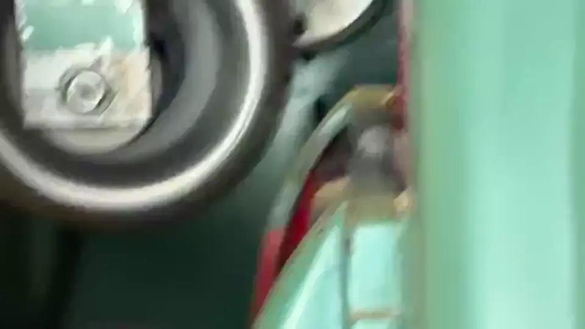
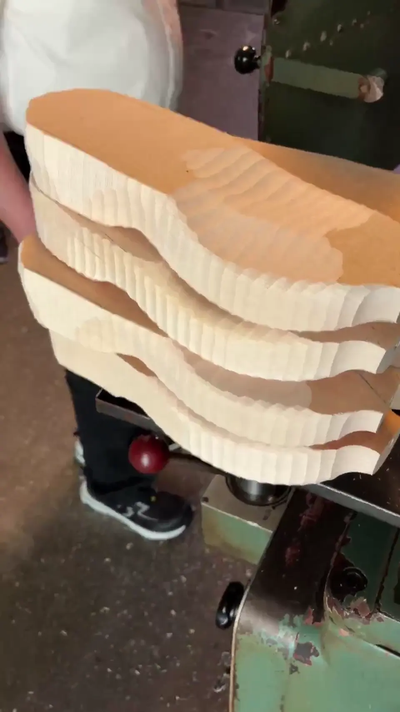

Eine Technik, die nicht verschwunden ist
Holzsohlen gehören nicht ausschliesslich ins Museum. Sie werden weiterhin hergestellt und mit unterschiedlichen Obermaterialien und Laufsohlen kombiniert. Zwischen traditionellem Holzschuh, modischem Clog und modernem Hybridmodell liegen jedoch grosse konstruktive Unterschiede.
Unsere wichtigste Quelle zur Gegenwart sind zwei eigene Filmaufnahmen aus einem noch tätigen Schweizer Betrieb. Sie zeigen reale Arbeitsschritte. Daneben betrachten wir das öffentlich dokumentierte Beispiel der österreichischen Schuhmanufaktur woody.
Wichtig: Die Schweizer Aufnahmen und die Angaben von woody stammen aus unterschiedlichen Betrieben. Wir vermischen die Verfahren nicht und schreiben keinem Betrieb Maschinen oder Produktionsschritte des anderen zu.
Einblick in eine Schweizer Holzsohlenfertigung
Die folgenden Filme dokumentieren den Einsatz von Werkzeugmaschinen bei der Bearbeitung von Holzsohlen. Sie sind keine historischen Filmaufnahmen und zeigen nicht die ehemalige Fabrik der Gebrüder Krafft.
Die Vorschaubilder wurden direkt aus den eigenen Videos entnommen. Dokumentationsstand Oktober 2026; Rechte und etwaige Zustimmung erkennbarer Personen beziehungsweise des Betriebs sind vor öffentlicher Verwendung zu prüfen.
Maschinen und Erfahrung
Eine Maschine bearbeitet das Werkstück, aber der Produktionsprozess umfasst mehr als die Bewegung des Werkzeugs: Rohmaterial, Aufspannung, Werkzeugzustand, Kontrolle und Nachbearbeitung sind entscheidend.
Nach Angaben aus dem besuchten Betrieb stammen die Maschinen aus Italien und werden ungefähr in die 1960er- oder 1970er-Jahre eingeordnet. Auf einem Schild wurde «INCOMA Milano» sowie «1961-409 Patende Italy» abgelesen. Hersteller, Datierung und Patentbezug sind noch nicht unabhängig verifiziert; auch die Schreibweise muss am Original kontrolliert werden.

Vom Rohling zur Sohle
01 · Vorbereiten
Holz auswählen, auf geeignete Abmessungen bringen und für die Bearbeitung vorbereiten.
02 · Formen
Kontur und Fussbett durch die jeweils eingesetzten Bearbeitungsverfahren herstellen.
03 · Fertigstellen
Oberflächen nachbearbeiten, Masse prüfen und die Sohle für weitere Schuhkomponenten vorbereiten.
Dies ist eine allgemeine Gliederung möglicher Fertigungsschritte. Die genaue Reihenfolge und die konkreten Maschinen sind je nach Betrieb unterschiedlich.
Warum die Bedienperson wichtig bleibt
Auch bei maschineller Bearbeitung gehören Fachkenntnisse zum Prozess. Was lässt sich am Geräusch oder am Schnittbild erkennen? Wie werden Rohlinge ausgerichtet? Welche Qualitätsmerkmale werden von Hand kontrolliert?
Gerade dieses praktische Wissen möchten wir dokumentieren, solange die Maschinen noch im Einsatz sind.

Herstellerbeispiel: woody in Österreich
Die Schuhmanufaktur woody in Sittersdorf (Kärnten) ist ein dokumentiertes Beispiel für heutige Holzschuhe mit biegsamen Sohlen. Nach eigenen Angaben des Unternehmens wird Weidenholz zugeschnitten und bearbeitet; Einschnitte schaffen Biegezonen, die im weiteren Fertigungsprozess mit einer elastischen Komponente verbunden werden. Danach folgen unter anderem die Formgebung des Fussbetts, Oberflächenbearbeitung und die Montage des Obermaterials.
Der Hersteller beschreibt 35 Produktionsschritte und betont, dass in seiner Manufaktur keine CNC-Maschinen, Roboter oder Fliessbänder eingesetzt werden. Das ist eine Herstellerangabe zu woody, keine Aussage über alle heutigen Holzschuhbetriebe.
Ein Schuh – verschiedene Aufgaben
Beim modernen Holzschuh kann Holz das Fussbett und die Form prägen, während ein anderes Material den Bodenkontakt übernimmt. Die Biegezonen zeigen, wie eine traditionelle Materialwahl mit neuen konstruktiven Anforderungen verbunden werden kann.
Ob eine bestimmte Konstruktion bequem, langlebig oder rutschfest ist, muss am fertigen Schuh und für den vorgesehenen Gebrauch beurteilt werden.
Wo Holzschuhe heute ihren Platz haben
| Bereich | Warum interessant? | Was zu prüfen bleibt |
|---|---|---|
| Alltag und Freizeit | Individuelle Gestaltung, Materialgefühl, traditionelle und moderne Formen | Gewicht, Passform, Abrollen und Pflege |
| Mode | Holz als sichtbares Gestaltungselement, Clogs, Sandalen, Stiefel | Nachfrage, Trends und Tragedauer |
| Berufliche Nutzung | Bestimmte Schuhformen werden für bestimmte Arbeitsumgebungen angeboten | Jeweilige Schutzanforderungen und Normen – nicht jeder Holzschuh ist ein Sicherheitsschuh |
| Handwerk und Tradition | Erhalt von Fertigungstechniken und regionalem Wissen | Nachfolge, Ausbildung und wirtschaftliche Tragfähigkeit |
Welche Fragen stellen sich heute?
Wirtschaftlichkeit
Für welche Stückzahlen lohnt sich die Produktion? Welche Arbeitsgänge kosten besonders viel Zeit?
Haltbarkeit
Welche Teile verschleissen zuerst, und was lässt sich sinnvoll reparieren?
Wissen bewahren
Wie dokumentieren wir Maschinen, Werkzeuge und Erfahrung, bevor Betriebe oder Arbeitsweisen verschwinden?
Unsere nächste Forschungsfrage: Was macht eine Holzsohle heute für Hersteller und Kundschaft attraktiv – und welche Hindernisse stehen einer breiteren Verwendung entgegen?
Belege und weitere Seiten
- woody: Schuhmanufaktur und heutige Produktion (Herstellerangaben)
- woody: 35 Fertigungsschritte (Herstellerangaben)
- Gestern: historische Holzsohlen
- Material & Werkstoffe
- Konstruktionen
- Morgen: Zukunftswerkstatt
Redaktionsstand: 28. Oktober 2026. Herstellerangaben sind als solche gekennzeichnet; offene Fragen bleiben ausdrücklich offen.